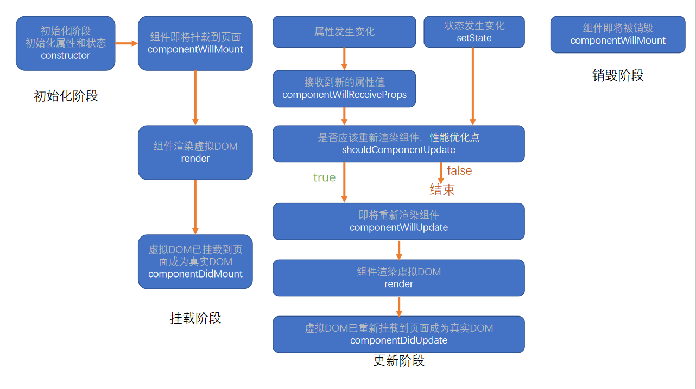
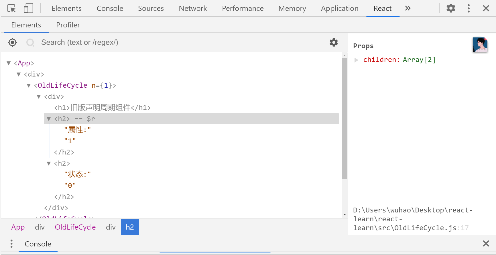
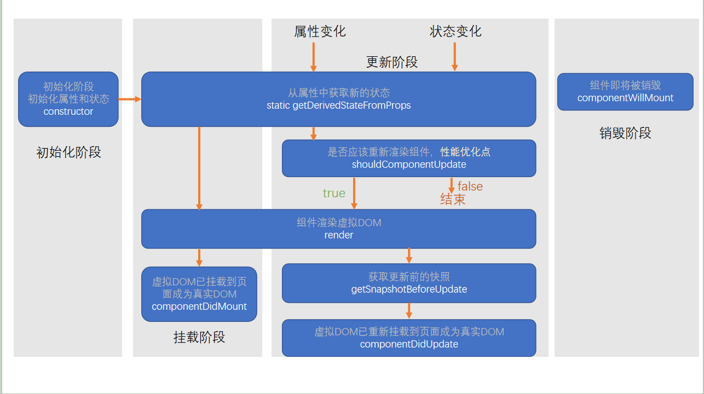

目前认为函数式组件没有生命周期
我们研究的是每一个组件的生命周期,而不是类本身,组件实例是相互独立的,周期互不干扰
一、生命周期概念
组件从诞生到销毁会经历一系列的过程，该过程就叫做生命周期。React在组件的生命周期中提供了一系列的钩子函数（类似于事件），可以让开发者在函数中注入代码，这些代码会在适当的时候运行。
生命周期仅存在于类组件中，函数组件每次调用都是重新运行函数，旧的组件即刻被销毁
二、旧版生命周期(React < 16.0.0)
新版仍然可用

2.1 constructor
同一个组件对象只会创建一次
constructor执行时，组件还没挂载到页面上，在constructor中调用setState，报错，
如果非要在constructor中使用setState，需要在外面加上一个定时器，这样setState执行时组件已挂载完毕
实际上setState修改了state会导致组件重新渲染，所以当第一次渲染还没完成就setState是不可能的
- 总之记住一句话在组件第一次挂载到页面之前，为了避免问题，构造函数中严禁使用setState
2.2 componentWillMount
组件即将挂载但是还没挂载的时候执行，在constructor执行完之后立即执行
正常情况下，和构造函数一样，它只会运行一次
可以使用setState，但是为了避免bug，不允许使用，因为在某些特殊情况下，该函数可能被调用多次
2.3 render
重点
- 返回一个虚拟DOM，会被挂载到虚拟DOM树中，最终reactDom将虚拟DOM渲染到页面的真实DOM中
- 我们可以认为当虚拟DOM树形成之后，页面就可以渲染了
render可能不只运行一次，只要需要重新渲染，就会重新运行
严禁使用setState，因为可能会导致无限递归渲染
2.4 componentDidMount
重点
挂载完成
只会执行一次
可以使用setState
通常情况下，会将网络请求、启动计时器等一开始需要的操作，书写到该函数中
- 例如：向后台请求数据
2.5 此时组件挂载完毕，并且进入活跃状态
- 组件一出生就马上干了2.1-2.4，然后组件等着，等需要重新渲染的时候
2.6 componentWillReceiveProps
组件接受的属性值被重新赋值(可以赋相同的值)，组件即将更新，此时触发，参数为新的属性对象
此时组件的状态还没有被改变
该函数可能会导致一些bug，所以不推荐使用
2.7 shouldComponentUpdate
重点
指示React是否要重新渲染该组件，通过返回true和false来指定
默认情况下，会直接返回true
该函数可以渲染新的状态
shouldComponentUpdate(nextProps, nextState) { |
2.8 componentWillUpdate
没啥用，面试不会考
- 组件即将被重新渲染
2.9 componentDidUpdate
组件已完成重新渲染
该函数可以获取组件之前的属性状态
componentDidUpdate(prevProps, prevState) { |
- 往往在该函数中使用dom操作，改变元素
2.10 componentWillUnmount
重点
- 组件从DOM树移除掉的时候,组件销毁

// 父组件 |
- 通常在该函数中销毁一些组件依赖的资源，比如计时器
三、新版生命周期(React >= 16.0.0)

去掉了componentWillMount，componentWillUpdate，componentWillReceiveProps
去掉componentWillReceiveProps的原因
- 反模式：某个数据既受属性影响，又受状态影响，React官方认为，某个数据的来源必须是单一的，所以就把componentWillReceiveProps删了
export default class Test extends Component { |
3.1 getDerivedStateFromProps
该函数替代了旧版生命周期中的componentWillReceiveProps
该函数很少用到，即使用到也总会有其他的解决方案
通过参数可以获取新的属性和状态
该函数是静态的
该函数的返回值会覆盖掉组件状态
// 子组件 |
3.2 getSnapshotBeforeUpdate
在DOM正式上台之前拍个照
真实的DOM构建完成，但还未实际渲染到页面中。
在该函数中，通常用于实现一些附加的dom操作(比如修改dom的颜色)
该函数的返回值，会作为componentDidUpdate的第三个参数
getSnapshotBeforeUpdate = (prevProps, prevState) => { |